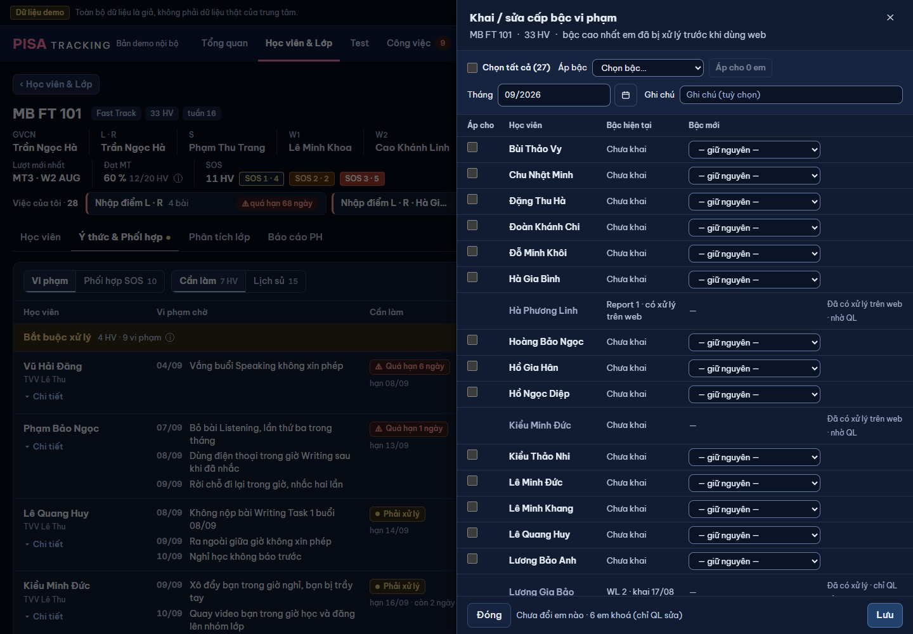

Chủ SP 11/11 mục 4: "vẫn thấy hơi rối và xấu một chút, cần sửa lại 1 tí nhé để thao tác dễ chịu hơn và làm nhanh hơn". Chỉ mockup. Dữ liệu seed (14/09/2026): lớp MB FT 101 — 33 HV, 27 em GV khai được, 6 em khoá; Tô Ngọc Hân đã khai Report 2. Luật giữ nguyên: bậc khai = bậc cao nhất em đã bị xử lý trước khi dùng web, tối đa WL 2; em đã có xử lý trên web / đã khai → chỉ QL sửa; bậc 0 không gắn tháng; em đã khai giữ tháng cũ trừ khi chạm ô tháng.

Thao tác thật (đọc KhaiBacLoPanel.tsx, KhaiBacPanel):
Vì sao rối / chậm:
SỬA: ô thả → hàng 7 chip "Không · R1 · R2 · WL1 · R4 · R5 · WL2" (rê = tên đủ "Report 4 + Meeting CX/GĐCN"; ⓘ ở cột giải thích viết tắt). Chip chưa chọn chỉ là chữ, không viền (dòng hoặc thanh đang rê / focus mới hiện viền; 375 không rê nên giữ viền mảnh) — không còn "bức tường nút"; bậc đang có = chip nền nhạt; bậc vừa chọn = chip nền đặc. Chưa khai = không chip nào sáng (giữ nguyên = không bấm gì). "Hiện tại" một dòng: bậc · nguồn ngắn ("khai 08/2026" / "trên web"), chưa khai "–". Dòng khoá: tên mờ, thay chip bằng khoá + "Nhờ QL sửa" ngay chỗ chọn. Tháng + ghi chú chung lên đầu (một hàng).
SỬA: có em được tick → hàng công cụ đổi thành "27 em đã chọn · Đặt bậc [chip]": bấm chip = áp ngay cho các em đã tick (bỏ bước "Áp cho n em"). Sửa riêng một em = bấm chip trên dòng em đó. Bấm lại chip đang sáng = bỏ đổi (về giữ nguyên). Dòng đổi: chip nền đặc; em đã có bậc thì "Hiện tại" thành "R2 → R1 ↓" màu nhấn; hạ bậc → màu vàng + "↓". Chân: "Đổi 27 em" + chia theo bậc + nút "Lưu · 27 em" (chưa đổi gì: nút tắt). Bấm chip ở "Đặt bậc" là áp ngay, thanh không giữ chip sáng — bấm lại không ghi đè em đã sửa riêng. Em đã có bậc cao hơn (Tô Ngọc Hân R2, cuối danh sách) bị "Đặt bậc · Không" → dòng em "R2 → Không ↓" vàng + chân "1 em hạ bậc" — không hạ im lặng. Cả lần = 5 bấm (trước: 8 bấm + 2 lần mở danh sách thả).
GIỮ: lưu theo lô, em lỗi báo ngay dòng (một dòng, đủ chữ ở title), các em khác đã lưu; panel dùng tiếp. Em lỗi vì vừa có xử lý trên web → dòng chuyển sang khoá "Nhờ QL sửa" (không mời thử lại vô ích). Em vừa lưu: chip về dáng "đang có", Hiện tại chỉ còn "✓" (bậc đã thấy ở chip, không lặp chữ); "1 em chưa lưu ›" cuộn tới dòng đó; chưa đổi gì thì nút Lưu tắt.
GIỮ luật: QL sửa được mọi em (máy chủ capBac.duoc). Lọc nhanh "Đã có xử lý · 7" để không phải cuộn 33 em. Hạ bậc hiện vàng "↓ hạ" + chân đếm riêng "1 em hạ bậc" (hậu quả lớn: chuỗi thang tính lại) — không hộp xác nhận thêm.
Thống nhất: cùng hàng chip (cỡ lớn 36 px) + tháng + ghi chú, panel hẹp 480. Mở từ Công việc → hạn ở dòng phụ như mọi việc, chân "Lưu" + "Lưu · việc tiếp ›" (V12).
| Thao tác | Trước | Sau | Kết luận |
|---|---|---|---|
| Chọn bậc một em | mở ô thả → chọn (2 bấm) | bấm chip (1 bấm) | GIỮ · nhanh hơn |
| Áp nhiều em | tick → "Chọn bậc…" → "Áp cho n em" | tick → bấm chip ở "Đặt bậc" | GIỮ · bỏ 1 bước |
| Chọn tất cả | "Chọn tất cả (27)" | như cũ (đầu hàng công cụ, ngoài tiêu đề bảng — G9) | GIỮ |
| Bỏ đổi một em | chọn lại "— giữ nguyên —" | bấm lại chip đang sáng | GIỮ |
| Tháng, ghi chú chung | hàng 2 của khối công cụ | một hàng đầu panel | GIỮ |
| Biết đã đổi gì | chữ "Khai mới / Nâng từ / ↓ Hạ từ" cột cuối | "Hiện tại → mới" ngay ô hiện tại; chân "Đổi n em · n hạ bậc" | GIỮ · gộp cột |
| Lưu | "Lưu n em" | "Lưu · n em" | GIỮ |
| Hoàn tác cả lô · lỗi từng em | dải ✓ + Hoàn tác · dòng đỏ | như cũ | GIỮ |
| Em khoá + lý do | cột cuối, 2 dòng | một dòng tại chỗ chọn + biểu tượng khoá | GIỮ · gọn |
| Lọc em | không có | "Tất cả · Chưa khai · Đã có xử lý" (đếm em) | THÊM nhỏ (tuỳ chọn, không chặn) |
| Một em · việc có hạn | panel riêng, ô thả | panel 480 cùng chip (K5) | GIỮ · đồng bộ |
| Cột "Áp cho" tiêu đề | có | bỏ — ô tick không cần tiêu đề | BỎ (chữ thừa) |
Dòng đọc Turso: không đổi — cùng GET /classes/:id/y-thuc/lo (1 lần khi mở) và POST …/lo/cap-bac theo lô; lọc làm trên dữ liệu đã nạp.
| Ý (lời giao) | Chỗ trong mockup | Đạt? |
|---|---|---|
| Liệt kê thao tác thật (khai ban đầu, sửa bậc, áp hàng loạt) | mục 0 (7 thao tác) | Đạt |
| Bậc hiện tại một dòng gọn | K1–K4 cột "Hiện tại" | Đạt |
| Chọn bậc mới tại chỗ (chip / ô chọn gọn) | hàng 7 chip mỗi dòng | Đạt |
| Áp nhiều em một bước | K2 "Đặt bậc" — bấm chip là áp | Đạt |
| Tháng + ghi chú chung | hàng đầu panel | Đạt |
| Chân lưu nói rõ "Đổi n em" | K2–K4 chân | Đạt |
| Giữ mọi thao tác cũ | bảng trên — không dòng nào mất | Đạt |
| Critique vòng 1 P0 "K3: em vừa lưu vẫn sửa được" — BÁO NHẦM | Theo mã: GV vẫn sửa bậc em mình vừa khai khi em chưa có xử lý trên web (capBac.duoc = true, seed: Tô Ngọc Hân khai R2 vẫn duoc); chỉ khoá khi có xử lý trên web / em đã khai có xử lý → "chỉ QL sửa". K3 đúng luật. | Giữ |
| [XM] viết tắt R1 / WL1 trên chip | chữ đủ ở rê + ⓘ; trình đọc màn đọc tên đủ | Chờ chủ SP nếu muốn chữ đủ (panel phải rộng 880) |